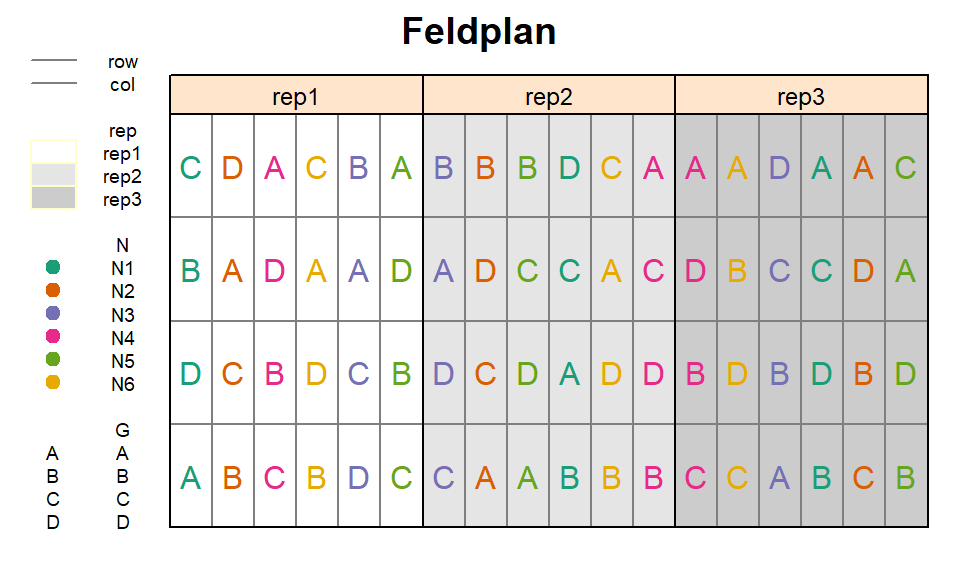
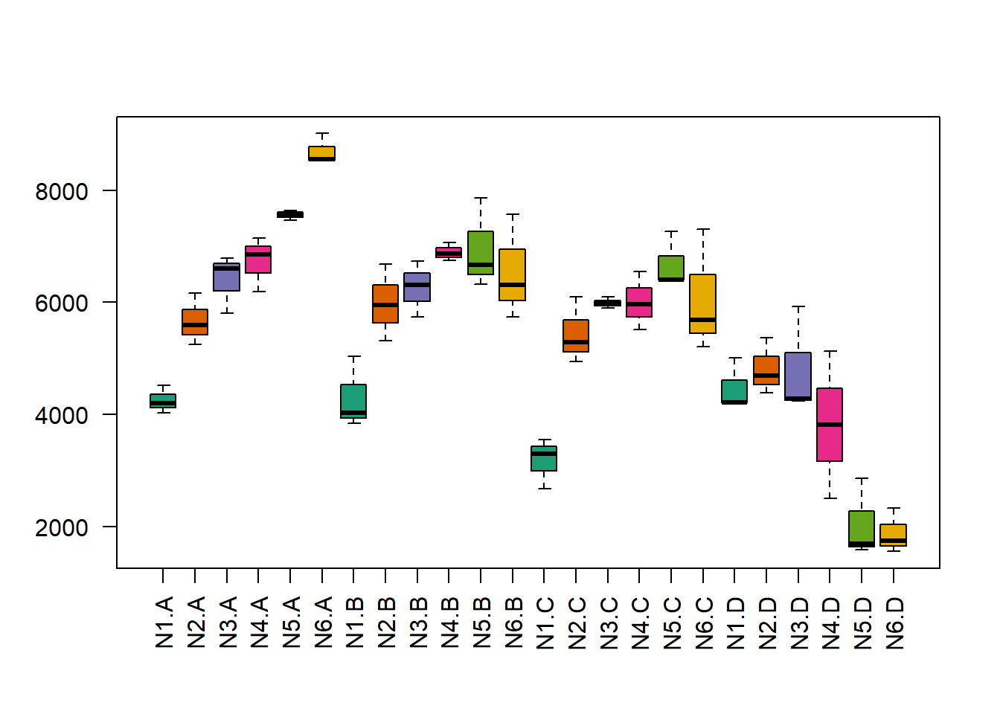
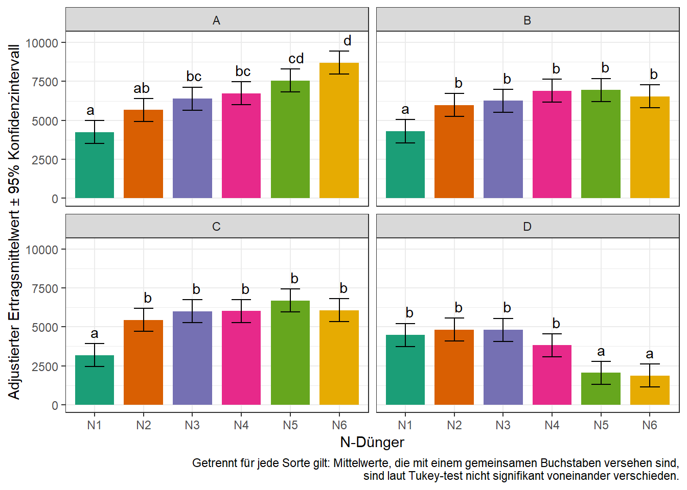

library(data.table) # bessere Datenmanipulation
library(ggplot2) # bessere Plots
library(emmeans) # adjustierte Mittelwerte
library(lme4); library(lmerTest) # gemischtes Modell
library(RColorBrewer) # bessere FarbenIn diesem Experiment wurden die Auswirkungen von 6 Stickstoffdüngern (N) auf den Ertrag von 4 Reissorten (G) untersucht. Demnach gab es zwei Behandlungsfaktoren mit insgesamt 6x4=24 Behandlungsstufenkombinationen. Diese 24 Kombinationen wurden 3 mal in vollständigen Blöcken wiederholt. Innerhalb der vollständigen Blöcke wurden die Kombinationen allerdings nicht wie bei einem RCBD vollständig randomisiert. Grund hierfür war, dass es beim Anlegen des Feldversuchs und speziell beim ausbringen der Dünger praktisch einfacher ist, wenn die Parzellen mit demselben Dünger in einer Linie liegen. Deshalb wurden die vollständigen Blöcke erst in 6 Spalten (=main plots) unterteilt, auf welche die 6 N-Stufen randomisert wurden. Erst dann, wurden die 4 Sorten den 4 Zeilen innerhalb jeder Spalte (=sub-plot) zufällig zugeordnet. Solch eine Versuchsanlage nennt man split-plot design. Hier mehr Infos zu Versuchsdesigns

print(splitplot, nrows=10)## N G rep mainplot yield
## 1: N1 A rep1 mp1 4520
## 2: N2 A rep1 mp2 5598
## 3: N4 A rep1 mp3 6192
## 4: N6 A rep1 mp4 8542
## 5: N3 A rep1 mp5 5806
## ---
## 68: N6 D rep3 mp14 1744
## 69: N3 D rep3 mp15 4236
## 70: N1 D rep3 mp16 5016
## 71: N2 D rep3 mp17 4382
## 72: N5 D rep3 mp18 2856str(splitplot)## Classes 'data.table' and 'data.frame': 72 obs. of 5 variables:
## $ N : Factor w/ 6 levels "N1","..
## $ G : Factor w/ 4 levels "A",""..
## $ rep : Factor w/ 3 levels "rep1"..
## $ mainplot: Factor w/ 18 levels "mp1"..
## $ yield : int 4520 5598 6192 8542 ..
## - attr(*, ".internal.selfref")=<exter..Erst wollen wir ein Gefühl für den Datensatz bekommen und betrachten einen Boxplot für die Stufenkombinationen der zwei Behandlungsfaktoren. Mittels des col= statements der boxplot() Funktion können wir angeben welche Füllfarben die Boxen haben sollen. Wir wählen dieselben Farben wie im Feldplan - mehr Infos dazu hier.
boxplot(yield ~ N*G, col=brewer.pal(6, "Dark2"), data=splitplot, las=2)
Es fällt auf, dass sich das Muster der Werte der verschiedenen N-Stufen für Sorte D deutlich von denen der anderen 3 Sorten unterscheiden. Dies deutet auf Wechselwirkungen zwischen den beiden Behandlungsfaktoren hin.
Wir können uns nun entschließen die Daten mittels eines Modells zu analysieren. Der Ertrag ist unsere metrische Zielvariable. ‘G’ und ‘N’ sind beides qualitative Behandlungsfaktoren. Um eine möglich Wechselwirkung der beiden zu modellieren, ergibt sich der treament part des Modell als G + N + G*N. Für die vollständigen Blöcke haben wir den festen Effekt ‘rep’ im Modell. Desweiteren müssen wir zufällige Effekte für die main plots ins Modell aufnehmen, da diese als zusätzliche Randomisationseinheit fungierten. Die andere, kleinste Randomisationseinheit des sub-plots (=Parzelle) wird durch den üblichen Fehlerterm abgebildet. Der design part des Modells ist also rep + (1|rep:mainplot). Somit haben wir gleichzeitig feste und zufällige Effekte im Modell und demnach ein gemischtes Modell, welches wir wieder mit lmer() aus dem lme4 package modellieren.
mod <- lmer(yield ~ G + N + G*N + rep + (1|rep:mainplot), data=splitplot)Zunächst sollten nun die Residuenplots evaluiert werden - beispielsweise mit plot(mod) und qqnorm(resid(mod)); qqline(resid(mod)) funktioniert. Erst danach ist eine Varianzanalyse zulässig.
Die Spalte ‘mainplot’ ist in diesem Beispiel übrigens prinzipiell überflüssig. Das liegt daran, dass man die 3x6 main plots anstatt mit ‘rep:mainplot’ auch mit ‘rep:N’ hätte modellieren können, da ein main plot immer einer N-Stufe entspricht (siehe Feldplan oben). Um es aber leichter verständlich zu machen, nutzen wir hier eine extra ‘mainplot’ Spalte. Siehe außerdem die Anmerkung aus dem vorigen Beispiel.
anova(mod)## Type III Analysis of Variance Table with Satterthwaite's method
## Sum Sq Mean Sq NumDF DenDF F value Pr(>F)
## G 89885075 29961692 3 36 85.7416 < 2.2e-16 ***
## N 19192886 3838577 5 10 10.9849 0.0008277 ***
## rep 683088 341544 2 10 0.9774 0.4095330
## G:N 69378044 4625203 15 36 13.2360 2.078e-10 ***
## ---
## Signif. codes: 0 '***' 0.001 '**' 0.01 '*' 0.05 '.' 0.1 ' ' 1Da dies Ergebnisse einer mehrfaktorielle Varianzanalyse sind, betrachten zualleerst den F-Test für die Wechselwirkung. Der signifikante p-Wert von G:N deutet darauf hin, dass die beiden Behandlungsfaktoren nicht rein additiv wirken, sondern wechselwirken. Dies bestätigt die Vermutung aus dem Boxplot der Rohdaten oben. Das bedeutet außerdem, dass wir die adjustierten Mittelwerte der Wechselwirkungseffekte berechnen wollen und nicht die der beiden Haupteffekte.
Mit emmeans() können wir auch adjustierte Mittelwerte für Wechselwirkungseffekte berechnen. Das geht entweder mit pairwise ~ N : G oder pairwise ~ N | G. Im beiden Fällen werden wie erwartet Mittelwerte für alle Kombinationen errechnet. Der Unterschied besteht in der Anzahl der Differenzen zwischen den Mittelwerten, die berechnet werden. Im ersten Fall werden wie gewohnt alle Mittelwerte miteinander verglichen. Im zweiten Fall, werden nur N-Stufen innerhalb einer Sorte miteinander verglichen. Natürlich können ‘N’ und ‘G’ hier auch ausgetauscht werden. Es kommt auf die Versuchsfrage an, welche Mittelwertvergleiche von größerem Interesse sind. Wir wollen uns hier auf die Vergleiche der N-Mittelwerte getrennt pro Sorte fokussieren.
means <- emmeans(mod, pairwise ~ N | G, adjust="tukey")
means <- CLD(means$emmeans, details=TRUE, Letters=letters)
means$emmeans # N-Mittelwerte pro Sorte## G = A:
## N emmean SE df lower.CL upper.CL .group
## N1 4252.667 365.5222 41.92 3514.969 4990.364 a
## N2 5672.000 365.5222 41.92 4934.303 6409.697 ab
## N3 6400.000 365.5222 41.92 5662.303 7137.697 bc
## N4 6732.667 365.5222 41.92 5994.969 7470.364 bc
## N5 7563.333 365.5222 41.92 6825.636 8301.031 cd
## N6 8700.667 365.5222 41.92 7962.969 9438.364 d
##
## G = B:
## N emmean SE df lower.CL upper.CL .group
## N1 4306.000 365.5222 41.92 3568.303 5043.697 a
## N2 5982.000 365.5222 41.92 5244.303 6719.697 b
## N3 6259.000 365.5222 41.92 5521.303 6996.697 b
## N6 6540.333 365.5222 41.92 5802.636 7278.031 b
## N4 6895.000 365.5222 41.92 6157.303 7632.697 b
## N5 6950.667 365.5222 41.92 6212.969 7688.364 b
##
## G = C:
## N emmean SE df lower.CL upper.CL .group
## N1 3177.333 365.5222 41.92 2439.636 3915.031 a
## N2 5442.667 365.5222 41.92 4704.969 6180.364 b
## N3 5994.000 365.5222 41.92 5256.303 6731.697 b
## N4 6014.000 365.5222 41.92 5276.303 6751.697 b
## N6 6065.333 365.5222 41.92 5327.636 6803.031 b
## N5 6687.333 365.5222 41.92 5949.636 7425.031 b
##
## G = D:
## N emmean SE df lower.CL upper.CL .group
## N6 1880.667 365.5222 41.92 1142.969 2618.364 a
## N5 2046.667 365.5222 41.92 1308.969 2784.364 a
## N4 3816.000 365.5222 41.92 3078.303 4553.697 b
## N1 4481.333 365.5222 41.92 3743.636 5219.031 b
## N3 4812.000 365.5222 41.92 4074.303 5549.697 b
## N2 4816.000 365.5222 41.92 4078.303 5553.697 b
##
## Results are averaged over the levels of: rep
## Degrees-of-freedom method: kenward-roger
## Confidence level used: 0.95
## P value adjustment: tukey method for comparing a family of 6 estimates
## significance level used: alpha = 0.05means$comparisons # N-Mittelwertdifferenzen pro Sorte## G = A:
## contrast estimate SE df t.ratio p.value
## N2 - N1 1419.33333 516.9265 41.92 2.746 0.0873
## N3 - N1 2147.33333 516.9265 41.92 4.154 0.0020
## N3 - N2 728.00000 516.9265 41.92 1.408 0.7218
## N4 - N1 2480.00000 516.9265 41.92 4.798 0.0003
## N4 - N2 1060.66667 516.9265 41.92 2.052 0.3317
## N4 - N3 332.66667 516.9265 41.92 0.644 0.9869
## N5 - N1 3310.66667 516.9265 41.92 6.405 <.0001
## N5 - N2 1891.33333 516.9265 41.92 3.659 0.0086
## N5 - N3 1163.33333 516.9265 41.92 2.250 0.2373
## N5 - N4 830.66667 516.9265 41.92 1.607 0.5987
## N6 - N1 4448.00000 516.9265 41.92 8.605 <.0001
## N6 - N2 3028.66667 516.9265 41.92 5.859 <.0001
## N6 - N3 2300.66667 516.9265 41.92 4.451 0.0008
## N6 - N4 1968.00000 516.9265 41.92 3.807 0.0057
## N6 - N5 1137.33333 516.9265 41.92 2.200 0.2593
##
## G = B:
## contrast estimate SE df t.ratio p.value
## N2 - N1 1676.00000 516.9265 41.92 3.242 0.0264
## N3 - N1 1953.00000 516.9265 41.92 3.778 0.0061
## N3 - N2 277.00000 516.9265 41.92 0.536 0.9943
## N4 - N1 2234.33333 516.9265 41.92 4.322 0.0012
## N4 - N2 558.33333 516.9265 41.92 1.080 0.8865
## N4 - N3 281.33333 516.9265 41.92 0.544 0.9939
## N5 - N1 2589.00000 516.9265 41.92 5.008 0.0001
## N5 - N2 913.00000 516.9265 41.92 1.766 0.4977
## N5 - N3 636.00000 516.9265 41.92 1.230 0.8195
## N5 - N4 354.66667 516.9265 41.92 0.686 0.9825
## N6 - N1 2644.66667 516.9265 41.92 5.116 0.0001
## N6 - N2 968.66667 516.9265 41.92 1.874 0.4319
## N6 - N3 691.66667 516.9265 41.92 1.338 0.7624
## N6 - N4 410.33333 516.9265 41.92 0.794 0.9671
## N6 - N5 55.66667 516.9265 41.92 0.108 1.0000
##
## G = C:
## contrast estimate SE df t.ratio p.value
## N2 - N1 2265.33333 516.9265 41.92 4.382 0.0010
## N3 - N1 2816.66667 516.9265 41.92 5.449 <.0001
## N3 - N2 551.33333 516.9265 41.92 1.067 0.8917
## N4 - N1 2836.66667 516.9265 41.92 5.488 <.0001
## N4 - N2 571.33333 516.9265 41.92 1.105 0.8765
## N4 - N3 20.00000 516.9265 41.92 0.039 1.0000
## N5 - N1 2888.00000 516.9265 41.92 5.587 <.0001
## N5 - N2 622.66667 516.9265 41.92 1.205 0.8322
## N5 - N3 71.33333 516.9265 41.92 0.138 1.0000
## N5 - N4 51.33333 516.9265 41.92 0.099 1.0000
## N6 - N1 3510.00000 516.9265 41.92 6.790 <.0001
## N6 - N2 1244.66667 516.9265 41.92 2.408 0.1769
## N6 - N3 693.33333 516.9265 41.92 1.341 0.7606
## N6 - N4 673.33333 516.9265 41.92 1.303 0.7819
## N6 - N5 622.00000 516.9265 41.92 1.203 0.8328
##
## G = D:
## contrast estimate SE df t.ratio p.value
## N2 - N1 166.00000 516.9265 41.92 0.321 0.9995
## N3 - N1 1935.33333 516.9265 41.92 3.744 0.0068
## N3 - N2 1769.33333 516.9265 41.92 3.423 0.0164
## N4 - N1 2600.66667 516.9265 41.92 5.031 0.0001
## N4 - N2 2434.66667 516.9265 41.92 4.710 0.0004
## N4 - N3 665.33333 516.9265 41.92 1.287 0.7903
## N5 - N1 2931.33333 516.9265 41.92 5.671 <.0001
## N5 - N2 2765.33333 516.9265 41.92 5.350 <.0001
## N5 - N3 996.00000 516.9265 41.92 1.927 0.4008
## N5 - N4 330.66667 516.9265 41.92 0.640 0.9872
## N6 - N1 2935.33333 516.9265 41.92 5.678 <.0001
## N6 - N2 2769.33333 516.9265 41.92 5.357 <.0001
## N6 - N3 1000.00000 516.9265 41.92 1.935 0.3963
## N6 - N4 334.66667 516.9265 41.92 0.647 0.9865
## N6 - N5 4.00000 516.9265 41.92 0.008 1.0000
##
## Results are averaged over the levels of: rep
## P value adjustment: tukey method for comparing a family of 6 estimatesErneut wollen wir die Ergebnisse abschließend in einem Balkendiagramm darstellen. Weil wir unser aber die N-Vergleiche isoliert pro Sorte konzentrieren wollen, können wir uns entscheiden ein Balkendiagramm pro Sorte zu erstellen. In solch einer Situation kann in der ggplot() Funktion das facet_wrap() statement genutzt werden.
Außerdem wollen wir die Balken wieder mit denselben Farben versehen, die die N-Stufen bereits im Feldplan und dem Boxplot hatten. Dazu fügen wir zuerst dem geom_bar() statement fill=N hinzu. Nun bekommt jede N-Stufe eine andere Farbe. Um nicht die default Farben zu nehmen, sondern selbst zu bestimmen welche Farben es sein sollen, schreiben wir zusätzlich noch scale_fill_manual(values=...) in die Funktion. Um die dann automatisch generierte Legende zu unterdrücken (weil sie in diesem Fall keine zusätzlichen Informationen bringt), fügen wir außerdem guides(fill=FALSE) hinzu.
means.plot <- as.data.table(means$emmeans) # korrektes Format für ggplot
print(means.plot, nrows=2)## N G emmean SE df lower.CL upper.CL .group
## 1: N1 A 4252.667 365.5222 41.91628 3514.969 4990.364 a
## 2: N2 A 5672.000 365.5222 41.91628 4934.303 6409.697 ab
## 3: N3 A 6400.000 365.5222 41.91628 5662.303 7137.697 bc
## 4: N4 A 6732.667 365.5222 41.91628 5994.969 7470.364 bc
## 5: N5 A 7563.333 365.5222 41.91628 6825.636 8301.031 cd
## ---
## 20: N5 D 2046.667 365.5222 41.91628 1308.969 2784.364 a
## 21: N4 D 3816.000 365.5222 41.91628 3078.303 4553.697 b
## 22: N1 D 4481.333 365.5222 41.91628 3743.636 5219.031 b
## 23: N3 D 4812.000 365.5222 41.91628 4074.303 5549.697 b
## 24: N2 D 4816.000 365.5222 41.91628 4078.303 5553.697 bggplot(data=means.plot, aes(x=N)) +
geom_bar(aes(y=emmean, fill=N), stat="identity", width=0.8) +
scale_fill_manual(values=brewer.pal(6, "Dark2")) + guides(fill=FALSE) +
geom_errorbar(aes(ymin=lower.CL, ymax=upper.CL), width=0.4) +
geom_text(aes(y=emmean+1500, label=.group)) +
facet_wrap(~G) + # ein plot pro Sorte
theme_bw() +
labs(main="Adj. N-Mittelwerte pro Sorte",
y="Adjustierter Ertragsmittelwert ± 95% Konfidenzintervall", x="N-Dünger",
caption="Getrennt für jede Sorte gilt: Mittelwerte, die mit einem gemeinsamen Buchstaben versehen sind,\n sind laut Tukey-test nicht signifikant voneinander verschieden.")